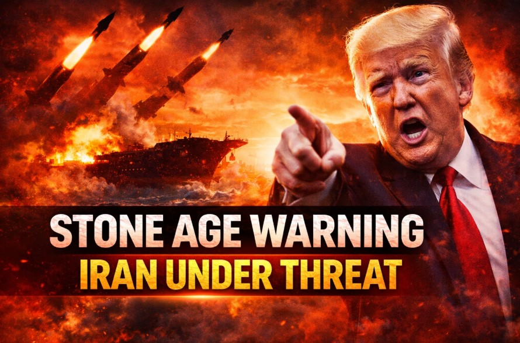

Trump’s “Stone Age” Warning to Iran: Strategy, Signals, and What It Really Means

In one of the strongest statements yet, Donald Trump warned Iran of extreme retaliation—signaling a major shift in tone and strategy.
But beyond the headline, this speech reveals a deeper reality: the war is not just military—it’s economic, psychological, and global.
💣 Military Claims vs Ground Reality
- US close to completing major operation
- Iran’s military heavily damaged
- More strikes expected
- Leadership structure weakened
👉 Strong claims + escalation signals = strategic messaging, not just updates.
🧠 The Strategy Behind the Words
The speech targets two audiences:
- Domestic voters → confidence + control
- Global markets → stability reassurance
👉 This is narrative management, not just military communication.
⚔️ “Quick War” Narrative
The claim that operations could end in weeks mirrors past conflicts—but history suggests otherwise.
👉 Fast victory narratives often precede longer wars.
🛢️ Oil: The Real Battlefield
Trump emphasized oil flows, urging nations to rely on US supply and secure key routes.
👉 Control of energy = control of global economy.
🌍 Market Reality vs Messaging
While stability was promised, actual conditions show volatility:
- Oil price fluctuations
- Shipping risks
- Insurance costs rising
👉 Markets respond to risk, not speeches.
🔮 What Happens Next?
- Short war scenario → stabilization
- Prolonged war → inflation risk
- Regional escalation → global disruption
🧾 Final Takeaway
This statement is more than a warning—it’s a strategic message across military, economic, and political layers.
👉 In modern wars, perception is as powerful as firepower.